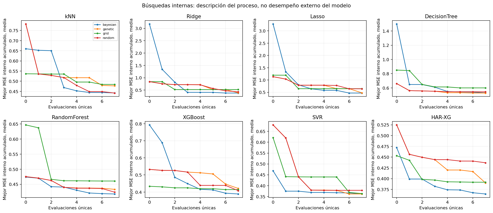
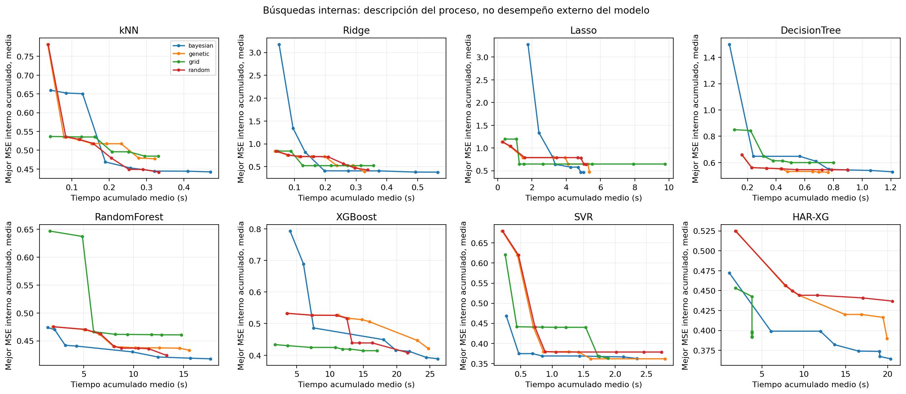
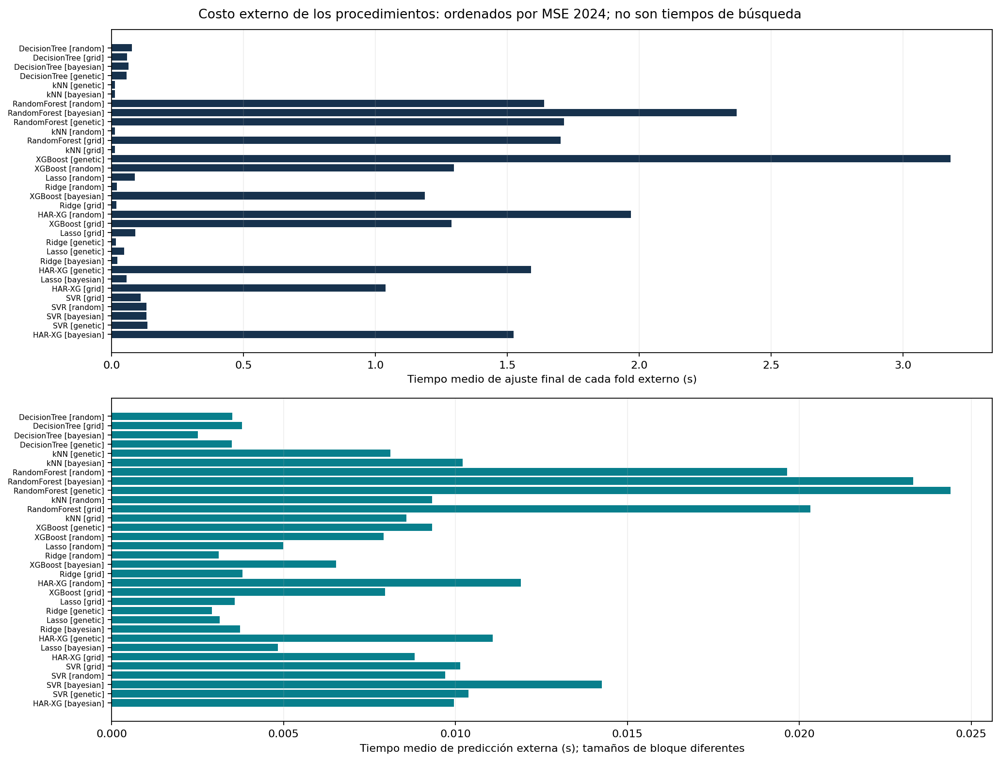

18 de octubre de 2026 · estudio local
Al generarse este informe local, GitHub y Render todavía no se habían actualizado. Esta copia publica la revisión el 18/10/2026 y conserva los modelos vigentes y la presentación original. Los años 2025 y 2026 ya habían sido examinados; este estudio produce evidencia retrospectiva y no una confirmación en datos nunca observados.
Se registraron 28,672 evaluaciones internas y 3,072 evaluaciones externas. El error interno guía la selección; el error externo evalúa el procedimiento. Elegir posteriormente un procedimiento por su media externa es un paso adicional de selección.
| model | mse2025 | mse2026 | reduction2026_pct | p_dm_holm4 | gain_ci_low | gain_ci_high | strong_retrospective_gate |
|---|---|---|---|---|---|---|---|
| HAR-XG [grid] | 0,451651 | 0,437531 | 4,05888 | 0,656685 | -0,000675315 | 0,0455451 | False |
| HAR-XG [random] | 0,481248 | 0,444195 | 2,59777 | 0,759366 | -0,0112749 | 0,0432099 | False |
| HAR-XG [bayesian] | 0,458839 | 0,442956 | 2,86938 | 0,759366 | -0,00554905 | 0,0378098 | False |
| HAR-XG [genetic] | 0,466882 | 0,440576 | 3,39133 | 0,759366 | -0,00519269 | 0,041059 | False |
La regla reforzada requiere menor MSE en 2026, DM-HLN/HAC con Holm4 favorable, intervalo estacionario de ganancia completamente positivo, pertenencia al MCS, rechazo SPA global y menor MSE en 2025. Todos los candidatos y ambos años se muestran, sin escoger el filtro o la familia de pruebas más favorable. Se requieren al menos 1.000 réplicas para MCS, SPA y los intervalos.
MSE y los intervalos de ganancia se expresan en puntos porcentuales de volatilidad al cuadrado. RMSE y MAE se expresan en puntos porcentuales; R² y la reducción porcentual son adimensionales.
| year | volatility_window | model | original_mse | mse | mse_reduction_pct | rmse | mae |
|---|---|---|---|---|---|---|---|
| 2026 | 7 | HAR-XG [bayesian] | 1,05334 | 1,02172 | 3,00112 | 0,933637 | 0,582868 |
| 2026 | 7 | HAR-XG [genetic] | 1,05334 | 1,02052 | 3,11569 | 0,93586 | 0,580641 |
| 2026 | 7 | HAR-XG [grid] | 1,05334 | 1,0111 | 4,00973 | 0,927012 | 0,574805 |
| 2026 | 7 | HAR-XG [random] | 1,05334 | 1,01837 | 3,31967 | 0,931843 | 0,58323 |
| 2026 | 14 | HAR-XG [bayesian] | 0,395552 | 0,385608 | 2,51395 | 0,574303 | 0,327015 |
| 2026 | 14 | HAR-XG [genetic] | 0,395552 | 0,381248 | 3,61608 | 0,570528 | 0,323303 |
| 2026 | 14 | HAR-XG [grid] | 0,395552 | 0,378244 | 4,37565 | 0,566976 | 0,319745 |
| 2026 | 14 | HAR-XG [random] | 0,395552 | 0,385008 | 2,66545 | 0,573464 | 0,342762 |
| 2026 | 21 | HAR-XG [bayesian] | 0,22521 | 0,216182 | 4,00847 | 0,427918 | 0,226329 |
| 2026 | 21 | HAR-XG [genetic] | 0,22521 | 0,217273 | 3,52397 | 0,426321 | 0,234547 |
| 2026 | 21 | HAR-XG [grid] | 0,22521 | 0,215776 | 4,18891 | 0,424679 | 0,227195 |
| 2026 | 21 | HAR-XG [random] | 0,22521 | 0,227802 | -1,15123 | 0,434258 | 0,244433 |
| 2026 | 28 | HAR-XG [bayesian] | 0,150069 | 0,14831 | 1,17215 | 0,351553 | 0,191655 |
| 2026 | 28 | HAR-XG [genetic] | 0,150069 | 0,143264 | 4,53465 | 0,346807 | 0,18597 |
| 2026 | 28 | HAR-XG [grid] | 0,150069 | 0,145006 | 3,37376 | 0,348526 | 0,186725 |
| 2026 | 28 | HAR-XG [random] | 0,150069 | 0,145599 | 2,97855 | 0,349444 | 0,190585 |
| 2025 | 7 | HAR-XG [bayesian] | 1,1864 | 1,17714 | 0,780608 | 0,984618 | 0,678098 |
| 2025 | 7 | HAR-XG [genetic] | 1,1864 | 1,2066 | -1,70291 | 1,00012 | 0,688469 |
| 2025 | 7 | HAR-XG [grid] | 1,1864 | 1,16901 | 1,4662 | 0,980148 | 0,672721 |
| 2025 | 7 | HAR-XG [random] | 1,1864 | 1,21302 | -2,24382 | 0,999288 | 0,687794 |
| 2025 | 14 | HAR-XG [bayesian] | 0,368885 | 0,368528 | 0,0969393 | 0,546777 | 0,355756 |
| 2025 | 14 | HAR-XG [genetic] | 0,368885 | 0,358819 | 2,72893 | 0,538634 | 0,346002 |
| 2025 | 14 | HAR-XG [grid] | 0,368885 | 0,353349 | 4,21174 | 0,536168 | 0,344087 |
| 2025 | 14 | HAR-XG [random] | 0,368885 | 0,373592 | -1,27608 | 0,550721 | 0,361718 |
| 2025 | 21 | HAR-XG [bayesian] | 0,18444 | 0,181088 | 1,81726 | 0,382346 | 0,244879 |
| 2025 | 21 | HAR-XG [genetic] | 0,18444 | 0,183766 | 0,365166 | 0,384988 | 0,249018 |
| 2025 | 21 | HAR-XG [grid] | 0,18444 | 0,177353 | 3,84215 | 0,378897 | 0,239478 |
| 2025 | 21 | HAR-XG [random] | 0,18444 | 0,193755 | -5,0509 | 0,392398 | 0,254753 |
| 2025 | 28 | HAR-XG [bayesian] | 0,118999 | 0,108602 | 8,73691 | 0,293899 | 0,18222 |
| 2025 | 28 | HAR-XG [genetic] | 0,118999 | 0,11834 | 0,553609 | 0,304174 | 0,189147 |
| 2025 | 28 | HAR-XG [grid] | 0,118999 | 0,106896 | 10,1707 | 0,292855 | 0,181663 |
| 2025 | 28 | HAR-XG [random] | 0,118999 | 0,144623 | -21,5332 | 0,324977 | 0,200773 |
Comparaciones descriptivas dentro de cada objetivo. Una reducción negativa indica empeoramiento. La regla estadística principal se aplica al agregado global previamente declarado; estas filas no generan una búsqueda de la ventana más favorable ni nuevas afirmaciones de significancia.
| model | rmse_mean | rmse_sd | mae_mean | mae_sd | mse_mean |
|---|---|---|---|---|---|
| HAR-XG [bayesian] | 0,497868 | 0,131285 | 0,372755 | 0,0947326 | 0,37955 |
| SVR [genetic] | 0,495407 | 0,146329 | 0,368194 | 0,109061 | 0,381727 |
| SVR [bayesian] | 0,496078 | 0,147854 | 0,367813 | 0,110317 | 0,3826 |
| SVR [random] | 0,496473 | 0,146329 | 0,370779 | 0,109161 | 0,383962 |
| SVR [grid] | 0,496602 | 0,147437 | 0,370849 | 0,112113 | 0,387646 |
| HAR-XG [grid] | 0,499273 | 0,139302 | 0,37556 | 0,102408 | 0,388394 |
| Lasso [bayesian] | 0,492708 | 0,149398 | 0,368462 | 0,110944 | 0,390164 |
| HAR-XG [genetic] | 0,501602 | 0,132306 | 0,373913 | 0,0964755 | 0,392267 |
| Ridge [bayesian] | 0,500881 | 0,143968 | 0,372794 | 0,104478 | 0,392425 |
| Lasso [genetic] | 0,491984 | 0,154097 | 0,368888 | 0,114955 | 0,392718 |
| Ridge [genetic] | 0,502413 | 0,147335 | 0,376258 | 0,112164 | 0,39295 |
| Lasso [grid] | 0,514015 | 0,161067 | 0,390004 | 0,125294 | 0,431555 |
| XGBoost [grid] | 0,520555 | 0,146827 | 0,388103 | 0,111305 | 0,435669 |
| HAR-XG [random] | 0,524137 | 0,130921 | 0,391285 | 0,0956957 | 0,435706 |
| Ridge [grid] | 0,519161 | 0,160169 | 0,395221 | 0,123814 | 0,436534 |
| XGBoost [bayesian] | 0,527816 | 0,140569 | 0,391037 | 0,106514 | 0,438401 |
| Ridge [random] | 0,524435 | 0,154672 | 0,402026 | 0,120115 | 0,438728 |
| Lasso [random] | 0,52416 | 0,151321 | 0,400537 | 0,120868 | 0,444427 |
| XGBoost [random] | 0,533958 | 0,145368 | 0,394918 | 0,109019 | 0,449657 |
| XGBoost [genetic] | 0,536877 | 0,131922 | 0,400949 | 0,0981171 | 0,457156 |
| kNN [grid] | 0,555092 | 0,13884 | 0,411482 | 0,110098 | 0,472504 |
| RandomForest [grid] | 0,551563 | 0,14531 | 0,415702 | 0,111035 | 0,47383 |
| kNN [random] | 0,559567 | 0,137884 | 0,416056 | 0,107981 | 0,478945 |
| RandomForest [genetic] | 0,560342 | 0,15773 | 0,417642 | 0,115738 | 0,492698 |
| RandomForest [bayesian] | 0,566617 | 0,156141 | 0,421909 | 0,114579 | 0,501574 |
| RandomForest [random] | 0,568778 | 0,150159 | 0,422704 | 0,110007 | 0,50277 |
| kNN [bayesian] | 0,572112 | 0,130458 | 0,422441 | 0,105463 | 0,505273 |
| kNN [genetic] | 0,578494 | 0,127255 | 0,42461 | 0,104793 | 0,516063 |
| DecisionTree [genetic] | 0,652629 | 0,151573 | 0,471463 | 0,119244 | 0,661022 |
| DecisionTree [bayesian] | 0,654248 | 0,15216 | 0,472742 | 0,120212 | 0,670734 |
| DecisionTree [grid] | 0,653783 | 0,16424 | 0,470749 | 0,129463 | 0,679666 |
| DecisionTree [random] | 0,673808 | 0,155238 | 0,481087 | 0,120474 | 0,720185 |
Primero se promedian activos y ventanas dentro de cada bloque; la desviación de esta tabla se calcula entre los seis bloques. La tabla por configuración conserva sus seis resultados. El original elegido utilizando todo 2024 se excluye de estas pruebas externas.
Se inspeccionaron 64 modelos Lasso finales y 448 salidas: 0 modelos y 0 horizontes alcanzan max_iter. No se asume que todos los ajustes convergieron. Alcanzar el límite puede perjudicar el resultado de Lasso; la comparación describe los procedimientos ejecutados, sin demostrar superioridad universal frente a toda implementación convergida.
Se conservan n_iter_, dual_gap_, tol y max_iter. El dual gap se reporta crudo: su umbral depende de la escala del target centrado y ponderado de entrenamiento. Detenerse antes del límite no se presenta como certificación independiente. Esta inspección de modelos finales no reconstruye las advertencias de los ajustes internos/externos. No se reentrenaron ni excluyeron resultados. Abrir auditoría por modelo y horizonte.
| year | model | mse | rmse | mae | r2 |
|---|---|---|---|---|---|
| 2026 | Lasso [genetic] | 0,427513 | 0,562446 | 0,316601 | 0,754606 |
| 2026 | Lasso [bayesian] | 0,429275 | 0,563763 | 0,315734 | 0,752896 |
| 2026 | Lasso [grid] | 0,433918 | 0,560853 | 0,31743 | 0,753927 |
| 2026 | Lasso [random] | 0,435653 | 0,562656 | 0,322304 | 0,752286 |
| 2026 | SVR [grid] | 0,436465 | 0,567429 | 0,322496 | 0,750949 |
| 2026 | HAR-XG [grid] | 0,437531 | 0,566798 | 0,327117 | 0,751143 |
| 2026 | Ridge [genetic] | 0,437929 | 0,568245 | 0,324059 | 0,750202 |
| 2026 | Ridge [grid] | 0,43827 | 0,563217 | 0,319862 | 0,752255 |
| 2026 | SVR [bayesian] | 0,438435 | 0,568941 | 0,320598 | 0,749568 |
| 2026 | SVR [random] | 0,43971 | 0,568864 | 0,321899 | 0,748755 |
| 2026 | Ridge [random] | 0,440311 | 0,565966 | 0,32282 | 0,750532 |
| 2026 | HAR-XG [genetic] | 0,440576 | 0,569879 | 0,331115 | 0,747099 |
| 2026 | SVR [genetic] | 0,44079 | 0,570459 | 0,322513 | 0,747683 |
| 2026 | HAR-XG [bayesian] | 0,442956 | 0,571853 | 0,331967 | 0,747202 |
| 2026 | HAR-XG [random] | 0,444195 | 0,572252 | 0,340252 | 0,745424 |
| 2026 | Ridge [bayesian] | 0,444992 | 0,57352 | 0,325931 | 0,745329 |
| 2026 | HAR-Ridge + XGBoost | 0,456042 | 0,579586 | 0,344786 | 0,740759 |
| 2026 | XGBoost [bayesian] | 0,45743 | 0,579546 | 0,335222 | 0,739029 |
| 2026 | XGBoost [grid] | 0,459136 | 0,58086 | 0,33483 | 0,737646 |
| 2026 | RandomForest [random] | 0,467443 | 0,592736 | 0,35033 | 0,731481 |
| 2026 | XGBoost [genetic] | 0,467662 | 0,585395 | 0,34279 | 0,730643 |
| 2026 | RandomForest [genetic] | 0,467997 | 0,592978 | 0,35224 | 0,731375 |
| 2026 | RandomForest [bayesian] | 0,470647 | 0,594612 | 0,354472 | 0,730142 |
| 2026 | RandomForest [grid] | 0,472711 | 0,596835 | 0,35288 | 0,72922 |
| 2026 | XGBoost [random] | 0,482787 | 0,595027 | 0,34583 | 0,723475 |
| 2026 | DecisionTree [grid] | 0,519573 | 0,628705 | 0,379455 | 0,698396 |
| 2026 | kNN [random] | 0,526366 | 0,622503 | 0,362811 | 0,701668 |
| 2026 | kNN [bayesian] | 0,528021 | 0,623489 | 0,363137 | 0,70032 |
| 2026 | kNN [grid] | 0,529506 | 0,623113 | 0,364168 | 0,700556 |
| 2026 | kNN [genetic] | 0,530252 | 0,623815 | 0,364509 | 0,699907 |
| 2026 | DecisionTree [random] | 0,530436 | 0,633013 | 0,381359 | 0,693341 |
| 2026 | DecisionTree [bayesian] | 0,530536 | 0,63329 | 0,38192 | 0,692958 |
| 2026 | DecisionTree [genetic] | 0,537306 | 0,637166 | 0,381066 | 0,690393 |
| 2026 | Persistencia | 0,795143 | 0,767783 | 0,434525 | 0,545999 |
| year | model | mse | rmse | mae | r2 |
|---|---|---|---|---|---|
| 2025 | HAR-XG [grid] | 0,451651 | 0,547017 | 0,359488 | 0,746643 |
| 2025 | HAR-XG [bayesian] | 0,458839 | 0,55191 | 0,365238 | 0,743009 |
| 2025 | HAR-Ridge + XGBoost | 0,464681 | 0,558168 | 0,375569 | 0,737997 |
| 2025 | HAR-XG [genetic] | 0,466882 | 0,556978 | 0,368159 | 0,736411 |
| 2025 | Lasso [bayesian] | 0,476969 | 0,560174 | 0,364462 | 0,731404 |
| 2025 | SVR [genetic] | 0,477856 | 0,562727 | 0,371558 | 0,732901 |
| 2025 | SVR [bayesian] | 0,479832 | 0,565097 | 0,373782 | 0,730622 |
| 2025 | SVR [random] | 0,47997 | 0,564394 | 0,373716 | 0,731004 |
| 2025 | HAR-XG [random] | 0,481248 | 0,566846 | 0,376259 | 0,729997 |
| 2025 | Ridge [bayesian] | 0,482548 | 0,566782 | 0,374908 | 0,729011 |
| 2025 | Lasso [genetic] | 0,48395 | 0,563203 | 0,369304 | 0,727548 |
| 2025 | XGBoost [bayesian] | 0,490854 | 0,570562 | 0,377936 | 0,723194 |
| 2025 | SVR [grid] | 0,494043 | 0,570586 | 0,380103 | 0,723233 |
| 2025 | XGBoost [grid] | 0,494993 | 0,573432 | 0,379643 | 0,718551 |
| 2025 | XGBoost [genetic] | 0,499663 | 0,577537 | 0,385491 | 0,715055 |
| 2025 | Lasso [random] | 0,502721 | 0,57261 | 0,381302 | 0,718243 |
| 2025 | Ridge [genetic] | 0,506284 | 0,577544 | 0,384245 | 0,715361 |
| 2025 | Ridge [random] | 0,509114 | 0,578276 | 0,385443 | 0,714723 |
| 2025 | XGBoost [random] | 0,509589 | 0,583665 | 0,391528 | 0,707476 |
| 2025 | Lasso [grid] | 0,511643 | 0,575444 | 0,380561 | 0,714042 |
| 2025 | Ridge [grid] | 0,513144 | 0,580273 | 0,384025 | 0,712474 |
| 2025 | RandomForest [genetic] | 0,516668 | 0,591169 | 0,400636 | 0,708554 |
| 2025 | RandomForest [random] | 0,516857 | 0,591746 | 0,401843 | 0,708329 |
| 2025 | RandomForest [grid] | 0,519578 | 0,594527 | 0,403541 | 0,704992 |
| 2025 | RandomForest [bayesian] | 0,520737 | 0,593118 | 0,403702 | 0,708072 |
| 2025 | kNN [bayesian] | 0,555661 | 0,610281 | 0,411129 | 0,691468 |
| 2025 | kNN [random] | 0,555733 | 0,610304 | 0,41088 | 0,691276 |
| 2025 | kNN [grid] | 0,565408 | 0,61334 | 0,414441 | 0,687301 |
| 2025 | kNN [genetic] | 0,565501 | 0,61348 | 0,414542 | 0,687254 |
| 2025 | DecisionTree [genetic] | 0,628339 | 0,652484 | 0,448196 | 0,648184 |
| 2025 | DecisionTree [grid] | 0,632238 | 0,657704 | 0,450775 | 0,643455 |
| 2025 | DecisionTree [random] | 0,639017 | 0,660651 | 0,451846 | 0,639092 |
| 2025 | DecisionTree [bayesian] | 0,641554 | 0,660793 | 0,452133 | 0,640662 |
| 2025 | Persistencia | 0,828196 | 0,7477 | 0,497194 | 0,537732 |
358 orígenes en 2025; 236 en 2026. Las 112 salidas por fecha son dependientes: la inferencia usa una pérdida media por origen. RMSE macro es media de RMSE por serie, no la raíz del MSE global.
Comparación controlada de los cuatro optimizadores: 36 búsquedas independientes y secuenciales, con tres repeticiones. Los tiempos de la matriz principal se midieron bajo carga concurrente; la reanudación cambió de tres a seis trabajadores y quedó registrada sin modificar el protocolo congelado.



Las correcciones locales de información mutua, VIF, estacionalidad intradía y referencia HAR se conservan en el informe de la primera revisión. La dependencia residual puede persistir. Eliminar una columna HAR redundante cambia su regularización: aquí se evalúa como arquitectura nueva, no como mejora garantizada por el VIF.
El EDA original se hizo después del primer modelo; esa cronología se declara sin reescribirla. Los presupuestos reducidos y la exploración previa de ambos años limitan la conclusión. El siguiente contraste confirmatorio necesita un periodo no inspeccionado y el procedimiento congelado.
71 pruebas registradas. Se verificaron 209 archivos protegidos originales y los 512 modelos finales. Todas las salidas se guardaron en el nuevo experimento local.
Protocolo de entrenamiento · Plan de inferencia · Modelos seleccionados · Registro maestro de búsquedas · Métricas externas · Auditoría temporal · Resumen de revisión